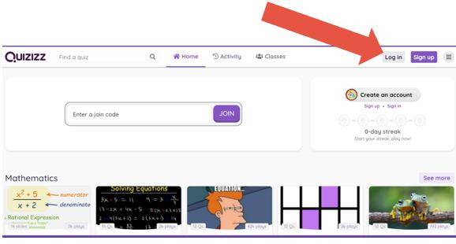

Ce este Quizziz?
Quizizz - instrument gratuit de evaluare a claselor care permite tuturor elevilor să învețe împreună. Este foarte ușor să creezi teste și să te distrezi!
- Quizizz are avatare amuzante, tabele live, teme, muzică, memuri și multe altele, de asemenea conține o bază de date cu milioane de teste create de profesori;
Testele create cu această aplicaţie pot fi accesate de către elevi de pe telefoanele mobile, tablete, laptop sau calculatoare conectate la Internet.
În calitate de profesor, puteți crea lecții, puteți efectua evaluări formative, puteți atribui teme pentru acasă și puteți avea alte interacțiuni cu elevii dvs. (pentru toate clasele) într-un mod captivant.
Unde găsim aplicația?
Cum ne conectam/logam?
Conectarea se poate realiza destul de uşor cu un cont Google sau se poate crea un nou cont

Cum utilizăm Quizziz?
←
Rezolvarea testului creat
- Opţiunea Live game permite asocierea unui cod testului. Acest cod este distribuit elevilor.
- Așezați cuvintele într-un format de grilă.Pe măsură ce elevii se conectează cu codul primit acestia vor apărea în lista testului. Când toţi elevii sunt conectaţi se apasă butonul START şi elevii primesc testul pentru a-l rezolva. Această parte a procesului poate fi la fel de dificilă ca și rezolvarea unui puzzle de cuvinte încrucișate. După ce ați așezat cuvintele, închideți toate pătratele nefolosite.
- Rezultatele se pot vedea în timp ce elevii rezolvă în secţiunea Reports
- La finalizarea testului se apasă butonul END GAME.
- Secţiunea Reports conţine rezultatele obţinute de fiecare elev care a susţinut testul.
După finalizarea acestor paşi testul poate fi rezolvat de elevi: Live Game (în timp real, în clasă, cu toţi elevii), Homework (temă),Solo Game (fiecare independent de ceilalţi).